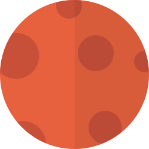
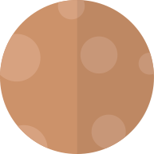
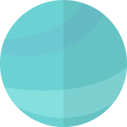

Combien de temps pouvez vous survivre sur les autres planetes du systeme solaire?
Il y'a deux types de planetes dans le systeme solaire les gazeuses et les telluriques. Les humains sont des bipedes ils ont besoin de marcher sur un sol dur donc a priori les telluriques sont les planetes les plus avantageuses... malheureusement ce critere n'est helas pas le seul à retenir pour permettre une colonisation future.... y'a t-il d'autres endroits ou l'homme peut poser le pied et s'y etablir sans trop de contrainte technique pour survivre. Est ce qu'il existe une planete dans notre systeme ou on peut venir en tshirt basket?





